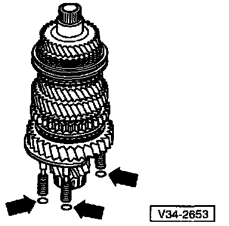
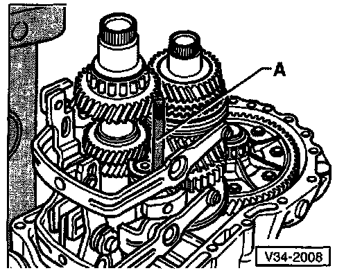
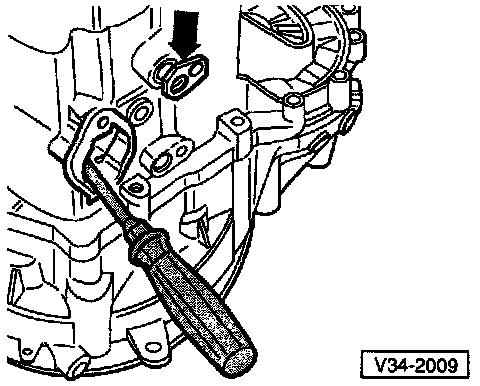
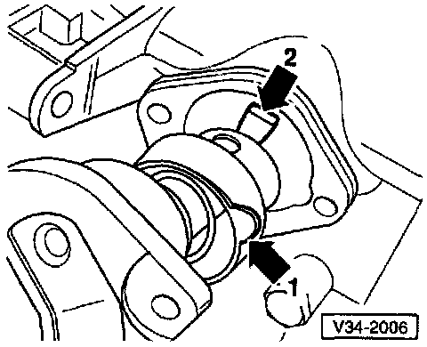
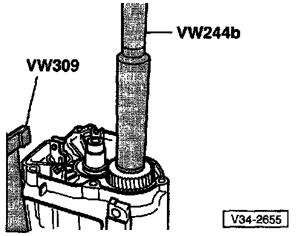
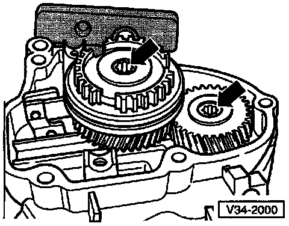

Assembly of 02A Transmission

- Install differential
- Always install new sealing rings (-arrows-) on output shaft bearing support
NOTE: Illustration shows only three of the total of four sealing rings.
- Install input shaft, Output shaft, and reverse shaft together
- Tighten nuts for output shaft bearing support
- Clean old thread-locking compound from threads on reverse idler shaft support using tap or equivalent thread cleaner
- Install reverse idler shaft support
- Install reverse gear selector mechanism

- Check installed position of reverse gear
- Install shift forks together with selector plates

- Install locating stud (A) into reverse idler shaft support to maintain shaft alignment while installing transmission housing
^ Stud (A) = (M8 x 100 mm)
- Align selector plates
NOTE: The selector segments must be positioned in the grooves on the operating sleeves.
- Install transmission housing

- Install reverse shaft support bolts (arrow)
- Install bolt (a), remove locating stud shown above, then install and hand-tighten bolt (b)
- Tighten bolts in the following sequence:
^ 1 - Bolt (a): 30 Nm (22 ft lb)
^ 2 - Bolt (b): 30 Nm (22 ft lb)

- Align shift fork assembly with screwdriver and install shift fork pivot pin (arrow)
- Repeat until all four pivot pins are installed

- Install selector shaft as follows:
^ Place selector plates in neutral position
^ Position lug (arrow 1) in recess in transmission housing
^ Position selector shaft so that finger (arrow 2) can be inserted in selector plates
- Install selector shaft cover

- Groove around circumference (arrow) faces transmission housing

- Drive on 5th gear

Checking 5th gear synchro-ring for wear
- Before installing 5th gear, press synchro-ring onto cone of gear and measure gap a with feeler gauge
^ Gap a = New 1.1 - 1.7 mm (0.O43-0.067 in)
Wear limit 0.5 mm (0.020 in)
- Position 5th gear together with needle roller bearing.
Place 5th gear synchro-ring on gear

5th gear synchro-ring, installation position
- Pointed teeth of operating sleeve (arrow 1) and high shoulder of synchro-hub (arrow 2) face transmission housing
- Synchro-hub mountings (arrow 3) align with cast synchro-ring locking lugs

5th gear synchro-with cast locking lugs

- Drive on 5th gear synchro-hub
^ Make sure that the synchro-ring is free to move while driving on the hub
- Install securing bolts for synchro-hub and 5th gear; hand-tighten only

Bellleville spring/attachment bolts for 5th gear synchro-hub and 5th gear, installation position
- Outer diameter/concave side (arrows) faces 5th gear

- Engage two gears to lock transmission before tightening synchro-hub and 5th gear securing bolts (arrows)
- Install 5th gear shift fork

Adjusting 5th gear
- Engage 5th gear
- Loosen bolt (1)
- Press operating sleeve and shift fork in direction of arrows and tighten bolt (1)
^ Tightening torque: 25 Nm (18 ft lb)
- Check measurement: It must NOT be possible to slide a 0.2 mm feeler gauge between operating sleeve and gear
- If necessary, repeat adjustment procedure
- Disengage 5th gear
NOTE:
^ Operating sleeve must now be in neutral position
^ Synchro-ring must be able to move freely
- Install transmission housing cover